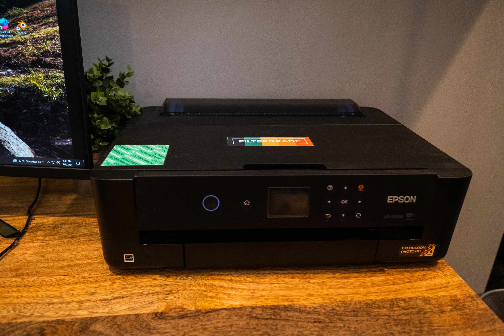

目前位置：
Equipment / 實驗室設備
實驗室主要經費來源為科技部專題研究計畫、系上經費及其它教育部相關計畫，感謝科技部、教育部及系上的支持。由於計畫皆屬競爭型，但仍盡力提供學生充足的實驗設備，目前實驗室設備大致如下：

每位碩士班學生皆配有蘋果電腦及一般PC各一台以上
另有Mac筆電及相關行動裝置(如平板電腦及手機)供學生使用

雷射印表機及Double A吃到飽
隨身碟等小型設備及耗材亦充份提供

實驗室提供圖書經費可以讓同學購買書籍

近年亦購置多套嵌入式開發板供學生使用